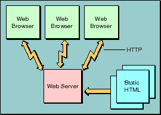
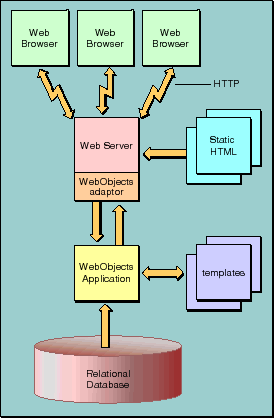

PATH
Documentation > WebObjects 4.5 >
WebObjects Developer's Guide
 Table of Contents
Table of Contents  Previous Section
Previous Section
Dynamic HTML Publishing
The vast majority of web content falls into the category of web publishing. Much of it is still of the static variety: sites that contain textual or graphical material that doesn't change much over time. However, there is increasing demand for sites that publish
ever-changing data: breaking news stories, up-to-the-minute stock quotes, or the current weather are good examples.
A typical web site looks something like that illustrated in Figure 1. Client requests, conforming to the HTTP protocol, originate at the user's web browser. These requests are sent over the network to the web server, which analyzes the request and selects the appropriate web page to return to the client browser. This web page is simply a text file that contains HTML markup. Using the HTML commands embedded within the file received from the web server, the browser renders the page.

Figure 1. A Static Publishing Site
Static publishing sites are easy to maintain. There are a number of tools on the market that allow you to quickly and easily create HTML pages, and as long as the page content doesn't change too often, it isn't that difficult to keep them up-to-date. Dynamic publishing sites, however, are a different story altogether. It would take a small army to keep a breaking news site up to date, for instance.
WebObjects was designed from the beginning to allow you to quickly and easily publish dynamic data over the web. You create templates that indicate where on the web page the dynamic data is to be placed, and a simple WebObjects application-which in some cases can be completely generated using Wizards provided as part of WebObjects-fills in the content when your application is accessed. The information that your web pages publish can reside in a database, or it can reside elsewhere (in files, perhaps), or it can even be calculated or generated at the time a page is accessed.
Figure 2 shows a WebObjects-based dynamic publishing site. Again, the HTTP request (in the form of a URL) originates with a client browser. If the web server detects that the request is to be handled by WebObjects, it passes that request off to a WebObjects adaptor. The adaptor packages the incoming HTTP request in a form the WebObjects application can understand and forwards it to the application. Based upon templates you've defined, and the relevant data from the data store, the application generates an HTML page which it passes back through the adaptor to the web server. The web server sends the page to the client browser, which renders it.

Figure 2. A Dynamic Publishing Site
Web-Enabled Client-Server Applications
Although the majority of web sites primarily publish data, the number of web-enabled applications is growing rapidly. Many corporations use intranets, the internet, or both to provide easy access to internal applications and data. An "online store" selling books, music, or even computers is one example of a web-enabled client-server application.
Web-enabled applications can have huge advantages over traditional apps. For one, clients don't have to install the application. This not only saves client disk space but ensures that the user always has the most
up-to-date version of the application. As well, the client computers can be a heterogeneous mix. Macintosh computers, PCs, workstations; anything that can run a web browser with the necessary capabilities.
WebObjects' development tools allow you to quickly and easily create web applications. WebObjects supplies a large number of pre-built components-web pages, or portions of web pages, from which you can build up your web application's interface. These components range from simple UI widgets (such as drop-down list boxes, tables, and the like) to complex ones that, for instance, present a tool bar. And the set of components that you can use with WebObjects is extensible, so you can create components that can then be re-used across all of your web applications.
Your application isn't entirely built of components, however. You create WebObjects applications from a combination of components and classes, some of which you write, some of which are provided by WebObjects. The classes you write can either be written using a compiled language (Java or Objective-C) or using WebObjects' own interpreted language, WebScript.
Accessing Legacy Data
Much of the data that is (or could be) presented on the web already exists in electronic form. Not only can it be a challenge to create a web site or web app to present your data using conventional tools, it can also be a challenge just to access the data itself. WebObjects works hand-in-hand with set of frameworks designed to allow your objects access to data stored in relational databases and other legacy data stores. These frameworks, collectively known as Enterprise Objects Framework, maps database contents into objects using a model you create. Freed from having to know SQL or any of the specific techniques involved in accessing data from your particular third-party databases, you can simply work with the data as objects, letting the Enterprise Objects Framework keep your objects in sync with the underlying data stores.
State Management
The HTTP protocol used on the web is inherently stateless. Most applications of consequence-as well as some of the more interesting dynamic publishing sites-need to keep state information associated with each user session, such as login information or a shopping basket.
WebObjects provides objects that allow you to maintain information for the life of a particular client session, or longer. This makes it particularly easy to implement an application like a web-based online store; you don't have to do anything special in order to maintain the contents of the user's shopping cart over the life of the session, for instance. And your online store could even monitor individual customer buying patterns and then highlight items they're more likely to be interested in the next time they visit your site.
Your applications can, of course, use more traditional means to keep track of state information-URLs, cookies, hidden fields, and so on-if you prefer.
Performance
Static web sites and traditional client-server applications have one strong suit: they both leverage the power of the client platform, minimizing the load on the server. It doesn't take all that much processing power to serve up a set of static web pages, for instance. Dynamic web applications, although a tremendous advance over static pages, requires additional server power to access the dynamic data and construct the web pages "on the fly."
The WebObjects application server is both efficient and scalable. With WebObjects, if more power, reliability, or failover protection is needed you can run multiple instances of your application, either on one or on multiple application servers. You can specify how WebObjects decides which instance each new client should be connected to. And, either locally or from a remote location, you can analyze site loads and usage patterns and then start or stop additional application instances as necessary. Load balancing is a very powerful feature of WebObjects that allows you to simply add more server capacity as the need arises.
Table of Contents  Next Section
Next Section